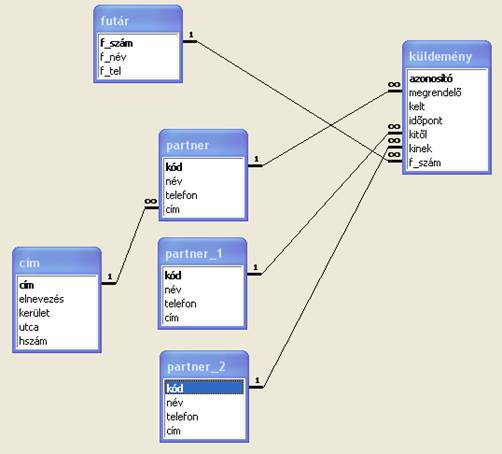

7.1. Futár
Adott futárszolgálat nyilvántartását végezzük a fővárosban. Bizonyos cégek, magánemberek, intézmények a partnereink, akik kisebb sürgős küldemények más partnerhez való eljuttatását bízzák a szolgálatra. A szolgálat diszpécsere minden egyes küldeményt a megrendelő megbízásából partnertől partnernek szállíttat valamelyik futárával, akit telefonon ér el.
Ugyanazon a címen több partner is található.
Az adatbázis szerkezete
Figyeljük meg, hogy a párhuzamos kapcsolat Access-ben a partner-tábla ismételt beszúrásával oldható meg a kapcsolati ábrába!

Mintasorok körültekintő készítése és a hivatkozási épség gyakorlása céljából töltse le az Access-adatbázist!